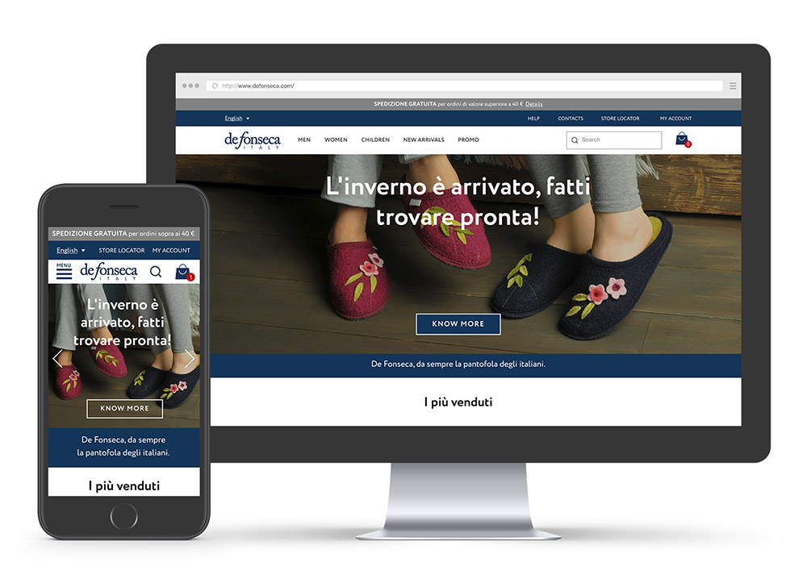
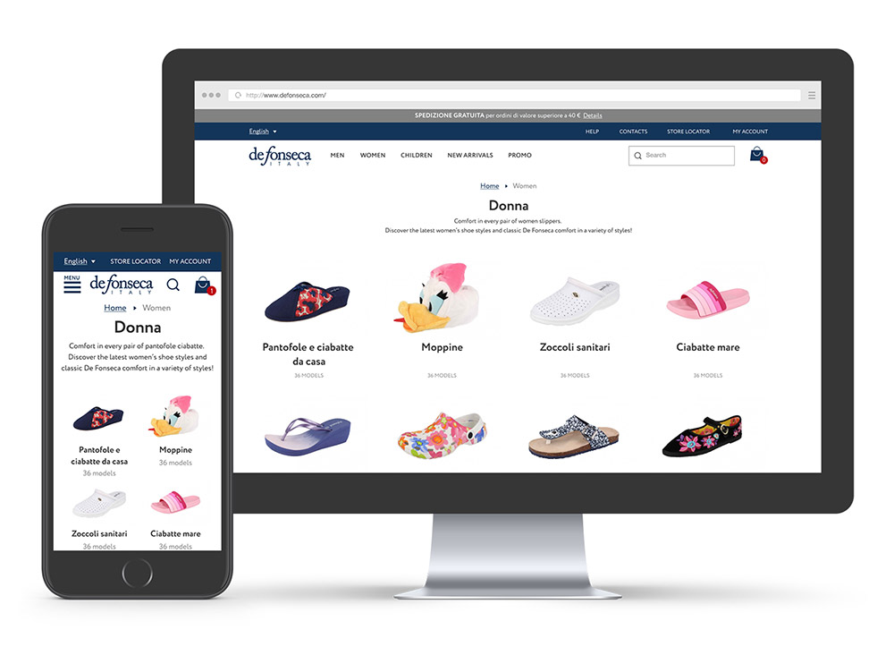
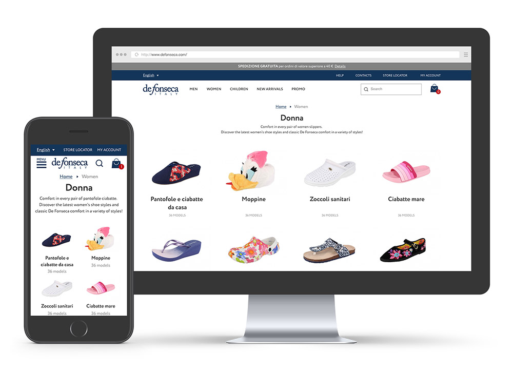

De Fonseca Website
De Fonseca is the Italy’s slipper brand No.1. The company produces and sells about 6 millions pairs per year internationally.

My Role
I led design and development of the global website. I was in charge of the growth of De Fonseca online business in Russia, through the development and management of digital marketing strategies.
What I did
- Analytics
- User Flows
- Mockups
- Management
- SMM
- SEO
The previous De Fonseca website had only desktop version, which made it difficult for customers to use it. I was asked to make a local Russian website, but instead I suggested creating a new global multilingual site, using responsive web design approach.
At first I conducted multiple rounds of research with De Fonseca marketing team in Italy. Because the website had already been operating for several years, we were able to use a historical Google Analytics data on the existing site. As a result, we discovered few experience issues throughout the site and product funnel, and I started working on the site structure and a new user path. Moreover the new website tree, product category names and descriptions were built based on actual Google search queries.

As the sole designer responsible for this project, I both led it and communicated with external development agency while building out the design. I produced sketches and wireframes, delivered final assets, supervised development, verified the live product, and iterated again for multiple rounds.
I simplified the process of choosing and buying slippers and made the user path more intuitive and fast than ever. As a result all the necessary information appeared on the page and the structure of the product page became clear and understandable.
Then I reworked the main page structure and look. Through simple and structured layouts, combined with bright images, we let the De Fonseca products speak for themselves.
The whole website design was made using responsive web approach, to make every page available on mobile phones or tablets:

 

Clear information on pricing, tax, payment options, and estimated delivery date was featured prominently throughout the cart, ensuring users feel supported and confident during the checkout process.
The payment section was desgined to be flexible in order to accommodate familiar payment methods and delivery options, to ensure users are presented with an experience they are comfortable with. For example, paying with bank card is common in Italy, and cash on delivery is preferred in Russia.
After the site was done I made everything to launch online sales in Russia: uploaded product images, wrote descriptions for every model, set up a payment processing and made possible to deliver parcels to all local regions.
Every few months I launched influencer marketing campaigns in social media to raise brand awareness.
Here are the results from one of the latest campaigns:

With De fonseca launching new collections, sales and other events for every season, I worked on email campaigns to convert the userbase into buying customers.
To show De Fonseca as a brand that resonates with users on a human level I produced photo shoots for every new collection.
All images are used globally in printed media, POS, exhibitions and digital activities.
Photographer: Andrew Bukharitsin

Outcome
I had to work under technical constraints and very tight budget. By increasing internal utilization of Google Analytics and Yandex.Metrika, I was able to create a culture of ongoing iteration based on live data.
I launched new PPC campaign, helping the brand take advantage of competitor keyword traffic to increase awareness and conversions. Influencer marketing became a big part of the De Fonseca digital strategy. All these actions effectively changed the brand awareness that resulted in a 388% increase of online sales and 5x increase in branded search traffic.
Moreover, the website attracted new B2B clients that amounted to millions of revenue for De Fonseca in Russia.

Anton possesses a winning combination of solid tech skills and business sense. He has an expert knowledge of user behavior, needs and pain.
— Rossano Rolla, De Fonseca

Anton quickly and efficiently achieves his goals thanks to his responsibility, focus on results, deep understanding of user needs.
— Sergey Doroshko, LETO
Anton is a clear expert who has a vast knowledge of UX and demonstrates a deep understanding of users.
— Roman Soroka, KupiVIP

Anton has an excellent eye for design and usability, he is a self-starter and a problem solver.
— Kirill Semkin, Spacebox